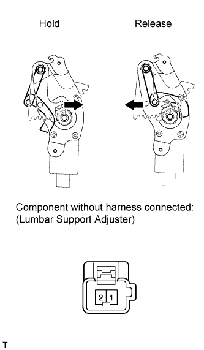
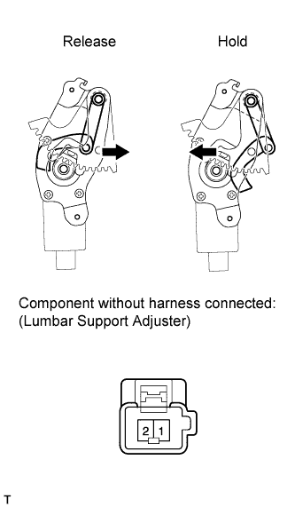

LUMBAR SUPPORT ADJUSTER ASSEMBLY (for Manual Seat) > INSPECTION |
| 1. INSPECT LUMBAR SUPPORT ADJUSTER ASSEMBLY LH (for LHD) |
 |
Check the operation of the lumbar support adjuster.
Check if the lumbar support adjuster moves smoothly when the battery is connected to the lumbar support adjuster motor connector terminals.
| Measurement Condition | Specified Condition |
| Battery positive (+) → 1 Battery negative (-) → 2 | Hold |
| Battery positive (+) → 2 Battery negative (-) → 1 | Release |
| 2. INSPECT LUMBAR SUPPORT ADJUSTER ASSEMBLY RH (for RHD) |
 |
Check the operation of the lumbar support adjuster.
Check if the lumbar support adjuster moves smoothly when the battery is connected to the lumbar support adjuster motor connector terminals.
| Measurement Condition | Specified Condition |
| Battery positive (+) → 2 Battery negative (-) → 1 | Hold |
| Battery positive (+) → 1 Battery negative (-) → 2 | Release |